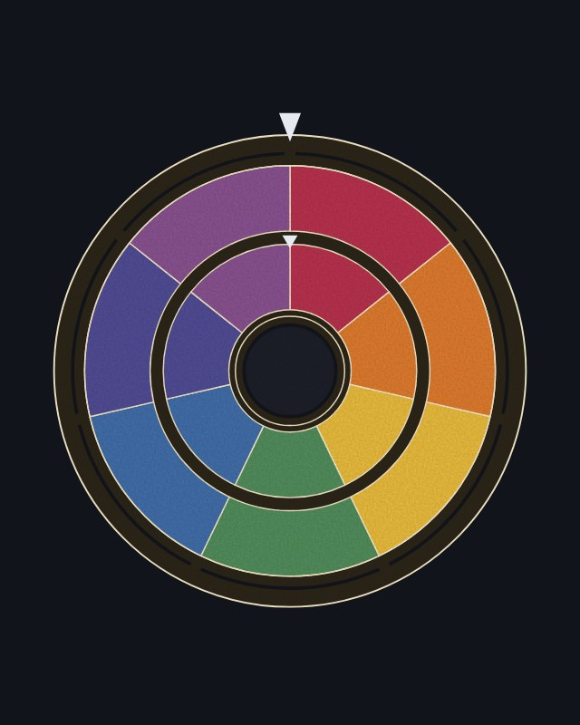

OMNA COLOR
Zwei Farbräder drehen gegeneinander. Zeigen sie zwei Farben, verbindet die Übung beide Themen, zeigen sie dieselbe Farbe, bleibt es beim reinen Thema. Gezogen wird aus 180 Gestaltungsübungen, mit dem Daumen oder per Knopf.
Öffnen